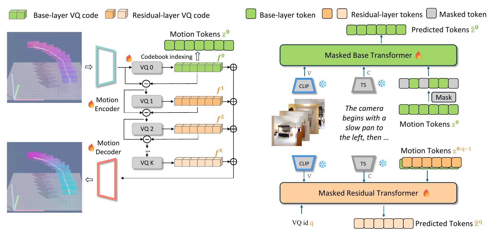
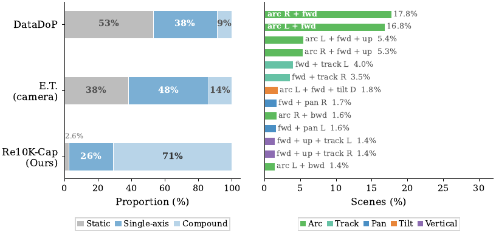
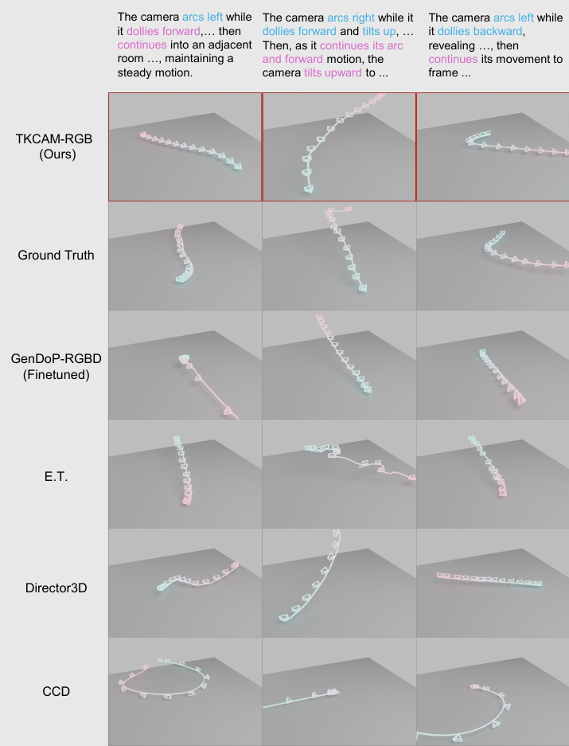
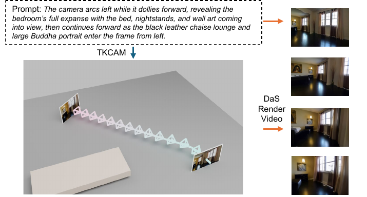

TRACK A · TEXT ONLY · 1,500 SAMPLES
0.529FID ↓
9.60%R@10 ↑
Best FID, matching, and retrieval among the compared text-conditioned methods.
NeurIPS 2026 poster / preprint
Direct the camera with words. Anchor the shot with a few images. Generate the motion between them.
01 / THE IDEA
Language describes the shot. Sparse RGB frames show where it should go. TKCAM turns both into a smooth, temporally coherent camera trajectory.
Existing text-driven methods can miss spatial detail, while explicit camera-state controls demand technical input. TKCAM uses selected image frames as soft visual guidance and generates the in-between motion without requiring users to specify camera extrinsics.
EXAMPLE DIRECTION
“The camera dollies forward, then arcs left around the living room.”
One framework supports open-ended prompts and sparse visual guidance.
Hierarchical motion tokens separate trajectory structure from finer detail.
A universal CLaTr evaluator compares motion across multiple domains.
02 / THE METHOD
TKCAM represents each camera pose with a 12-dimensional kinematic feature: position, velocity, and continuous 6D rotation.

A residual vector quantizer maps continuous camera motion into hierarchical discrete tokens.
A masked base transformer attends to text and timestamped visual keyframes.
A residual masked transformer builds finer motion, then the decoder reconstructs the path.
03 / THE DATASET
Scene-aware camera motion captions grounded in geometrically reconstructed indoor footage.
The dataset combines reliable camera trajectories from RealEstate10K with directorial captions. A two-stage captioning pipeline first derives camera motion from pose geometry, then adds visual scene context while keeping that motion description fixed.

04 / RESULTS
On the mixed-domain benchmark, TKCAM leads the compared methods on FID, matching score, and retrieval in the text-only track. Sparse RGB keyframes improve it further.
TRACK A · TEXT ONLY · 1,500 SAMPLES
Best FID, matching, and retrieval among the compared text-conditioned methods.
TRACK B · SPARSE KEYFRAMES · 994 SAMPLES
Sparse visual observations improve realism and text–trajectory alignment.
FID is computed on Universal CLaTr features; lower is better. R@10 is text–trajectory retrieval over each track's evaluation set; higher is better. The tracks use different sample counts.

05 / APPLICATION
With a directorial prompt and first and last frame observations, TKCAM generates a trajectory that can serve as a geometric prior for a video synthesis pipeline.

THE PAPER
Generating high-quality and controllable camera motion is essential for AI-assisted cinematography, video synthesis, and 3D scene understanding. We introduce TKCAM, a text- and keyframe-conditioned camera-motion synthesis framework based on generative masked modeling. We represent camera dynamics using a 12-dimensional kinematic feature comprising position, velocity, and a continuous rotation representation and discretize them into hierarchical motion tokens via a Residual Vector Quantizer (RVQ). A two-stage masked transformer architecture then learns to reconstruct and refine these tokens, utilizing explicit self- and cross-attention modules for multimodal conditioning. A central feature of our framework is sparse visual keyframe conditioning: users can provide free-form text prompts together with RGB observations at selected timestamps, which provide temporally localized visual guidance for generating coherent in-between trajectories. Furthermore, to advance evaluation standards, we curate RealEstate10K-Cap, a large-scale text-camera dataset, and establish a cross-domain benchmark with a Universal CLaTr Evaluator. Extensive experiments demonstrate that TKCAM surpasses recent state-of-the-art baselines on Fréchet distance (FID), text-motion matching scores, and retrieval metrics (R@K), while additional analyses evaluate temporal smoothness and cross-domain generalization.
CITE THIS WORK
If TKCAM helps your research, please cite the preprint.
@misc{yang2026tkcam,
title={TKCAM: Text and Keyframe to Camera Trajectory Generation},
author={Haozhe Yang and Zhiyang Dou and Zekai Gu and Cheng Lin and Wenping Wang and Yuan Liu and Taku Komura},
year={2026},
note={Preprint},
url={https://linearalgebrayhz.github.io/projects/TKCAM/}
}